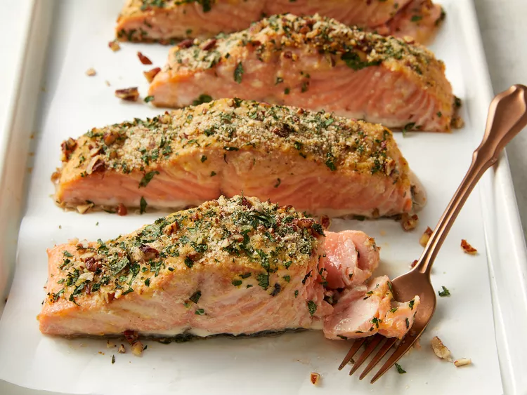

Baked Salmon

This mustard-crusted salmon is a wonderful way to prepare fresh salmon fillets in the oven. Be sure to make extra — your family will be begging for more!
Ingredients
- ¼ cup butter, melted
- 3 tablespoons Dijon mustard
- 1 ½ tablespoons honey
- ¼ cup dry bread crumbs
- ¼ cup finely chopped
pecans
- 4 teaspoons chopped fresh
parsley
- 4 (4 ounce) fillets salmon
- salt and pepper to taste
- 1 lemon, for garnish
Steps
-
Step: Preheaat the oven 200 degrees C (400 degrees F).
-
Step: Stir together butter, mustard, and honey in a small bowl. Set aside.

-
Step: Mix together bread crumbs, pecans, and parsley in another bowl.
-
Step: Brush each salmon fillet lightly with honey mustard mixture.
-
Step: Sprinkle the tops of fillets with bread crumb mixture.
-
Step: Bake salmon in the preheated oven until it flakes easily with a fork, 12 to 15 minutes. Season with salt and pepper, and garnish with a wedge of lemon.